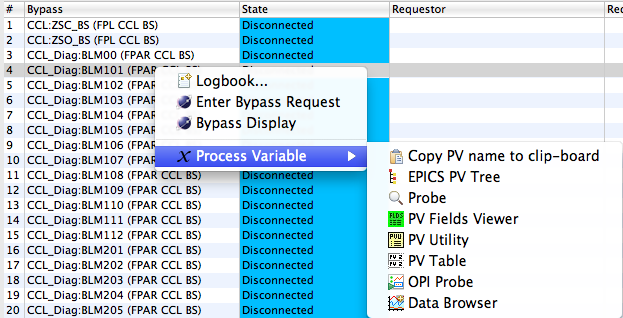

This tool implements a system for monitoring the status of the MPS Bypass PVs and bypass requests.
The relational database (RDB) provides a list of MPS Bypasses for each machine mode. To determine the current state of each bypass, the tool connects to two Process Variables (PVs) for each bypass, a mask and switch PV for each bypass.
The bypass name read from the RDB may for example be Ring_Vac:SGV_AB:FPL_Ring. It indicates a sector gate valve bypass Ring_Vac:SGV_AB in the Fast-Protect Latch (FPL) chain of the Ring.
The current status of this bypass is provided by the two PVs Ring_Vac:SGV_AB:FPL_Ring_swmask and Ring_Vac:SGV_AB:FPL_Ring_sw_jump_status, i.e. by adding _swmask respectively _sw_jump_status to the bypass name.
In short, the possible values from these two PVs are decoded as follows:
| sw_jump_status active=0 | sw_jump_status active=1 | sw_jump_status disconnected | |
| mask=0 | Non-bypassable | Bypassable | Disconnected |
| mask=1 | Error | Bypassed | Disconnected |
| mask disconnected | Disconnected | Disconnected | Disconnected |
The PV names associated with a bypass are also available from the context menu of a bypass: When opening the context menu of a bypass, you can send the PV names for the "..._swmask" and "..._sw_jump_status" to for example the Data Browser to inspect how they change over time:
The following color scheme is used for displaying MPS Bypass information, based on MPS bypass pv status and MPS bypass request status.
| Bypass State | Bypass Request Status | Color Code | Status |
| Bypassed | Requested | silver | OK/Mild |
| Not Requested | orange | Attention Getter | |
| Bypassable | Requested | lavender | Questionable |
| Not Requested | orange | Attention Getter | |
| Error | Requested | red | Should Never Happen |
| Not Requested | red | Should Never Happen | |
| Disconnected | Requested | gold | Worrisome |
| Not Requested | blue | Good | |
| Not Bypassable | Requested | gold | Worrisome |
| Not Requested | blue | Good |